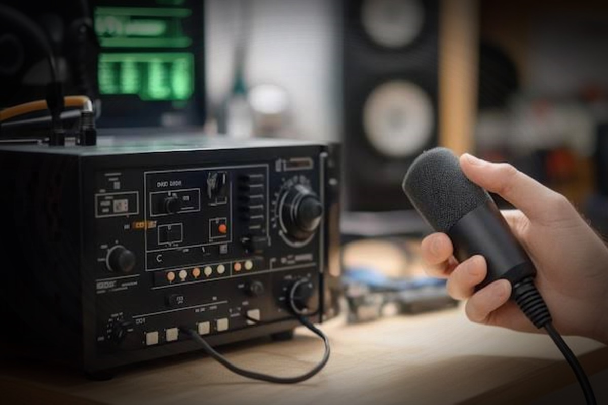
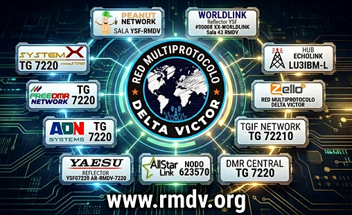
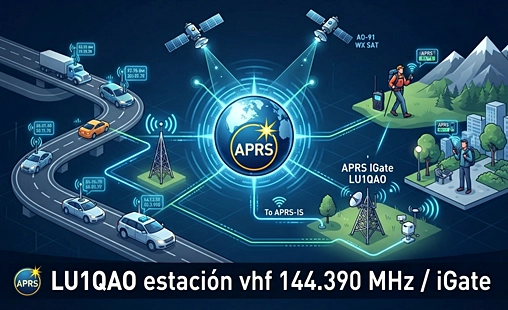
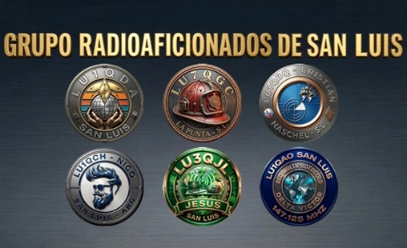
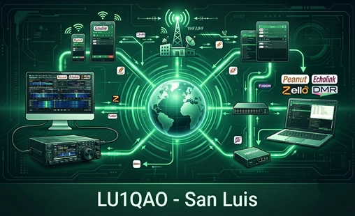

Cargando fecha UTC...
¿Qué es ser
radioaficionado?

Más allá de las antenas, los equipos y la técnica, ser radioaficionado es abrazar un apasionante hobby que desafía las distancias. Es tejer hilos invisibles en el aire, convertir el silencio del éter en un puente solidario y descubrir que, en este mundo acelerado, todavía es posible conectar corazones a través de una simple frecuencia.
Gateway San Luis 147.125 MHz
Red Multiprotocolo
Delta Víctor

Red Multiprotocolo Delta Víctor es una red 100% libre en donde realizar qso’s con cientos de colegas de cualquier parte del planeta. En la que todos sus usuarios buscan una forma particular de hacer radio mediante sistemas digitales y sistemas analógicos interconectados para brindar más alternativas de comunicarse.
Sistema Automático de Reporte de Paquetes
APRS
Estación LU1QAO

El APRS (Automatic Packet Reporting System o Sistema Automático de Reporte de Paquetes) es un protocolo de comunicación digital utilizado por los radioaficionados para compartir datos en tiempo real, enviar mensajes de texto cortos y rastrear ubicaciones mediante GPS. Fue creado en 1992 por Bob Bruninga.
G.R.A.D.S.L.
GRUPO RADIOAFICIONADOS
DE SAN LUIS

Somos un grupo de amigos y radioaficionados de distintos puntos geográficos de la provincia de San Luis. Nuestro objetivos es hacer contactos por radio y también nuevos amigos. LU1QDA, LU7QGC, LU1QBQ, LU1QCH, LU3QJL y LU1QAO.
Digimodos y Digital Voice
FT8 RTTY PSK31
DMR C4FM D-STAR

Comunicación por radio mediante señales de audio procesadas por una computadora, un transceptor de radio y una interfaz de audio o control. DV en radioafición son sistemas que convierten la voz humana en datos digitales antes de transmitirla por radio.